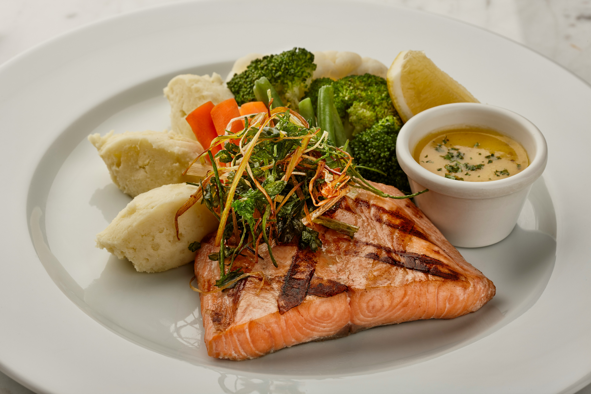
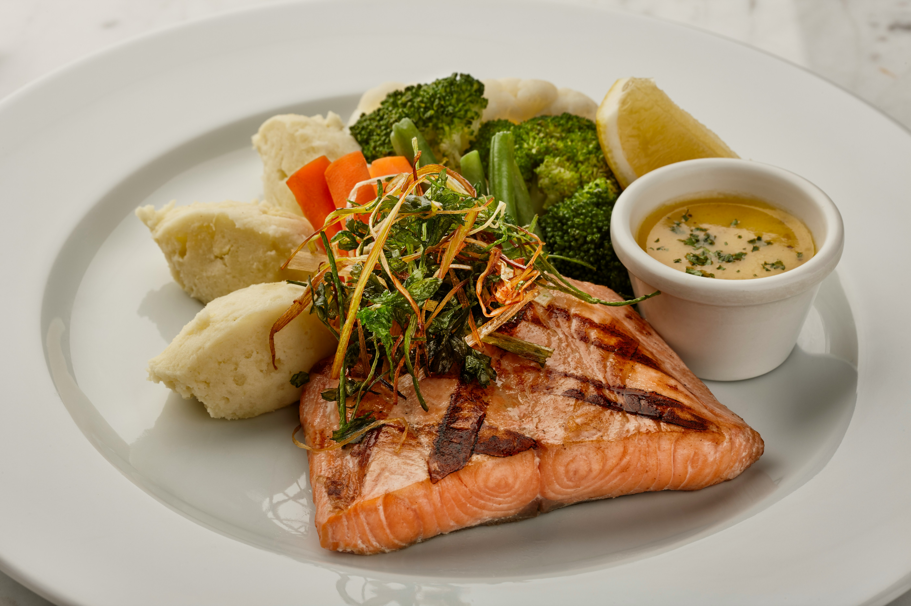

Somon Izgara Tarifi
Malzemeler:
- 2 dilim somon
- 1 yemek kaşığı zeytinyağı
- Yarım limon suyu
- 1 çay kaşığı tuz
- 1 çay kaşığı karabiber
- 2 diş sarımsak (rendelenmiş)
- 2 dal taze kekik (isteğe bağlı)
Hazırlık:
- Somon dilimlerini zeytinyağı, limon suyu, tuz, karabiber ve rendelenmiş sarımsak ile marine edin.
- Marine edilmiş somonları buzdolabında en az 30 dakika bekletin.
- Izgaranızı ısıtın ve somon dilimlerini her iki tarafı da altın rengi olana kadar pişirin.
- Servis yaparken üzerine taze kekik dalları ekleyebilirsiniz.
 
